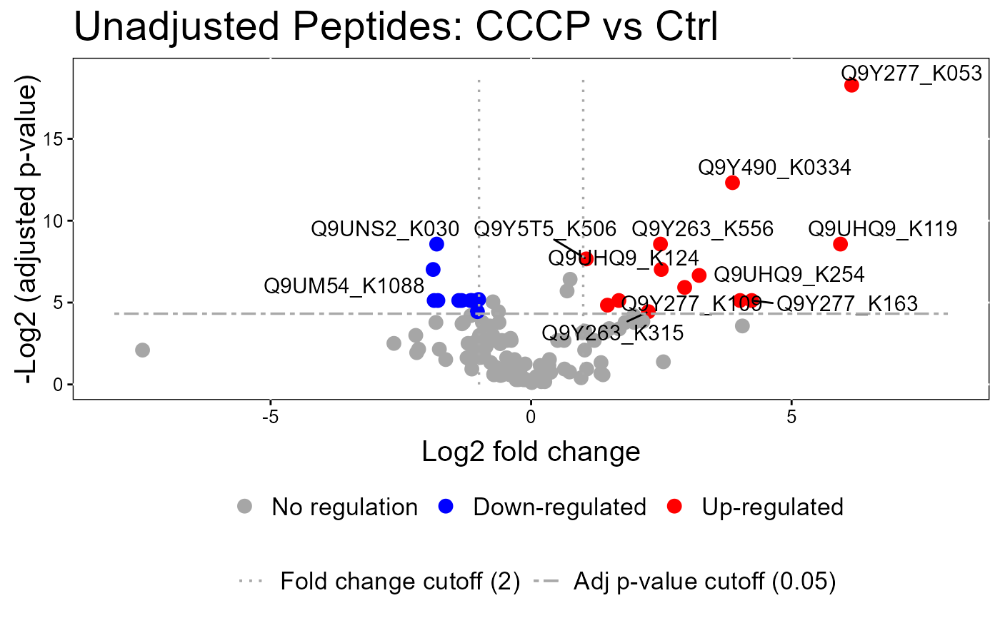
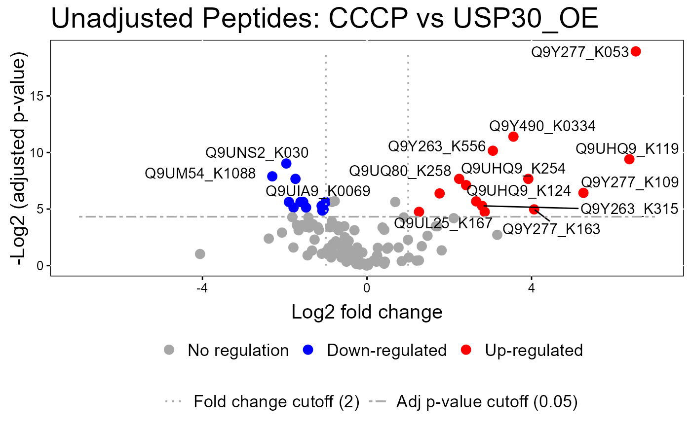
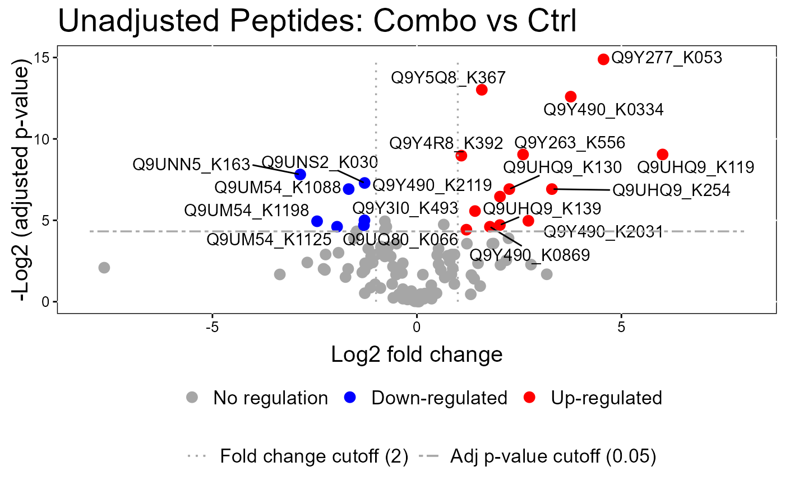
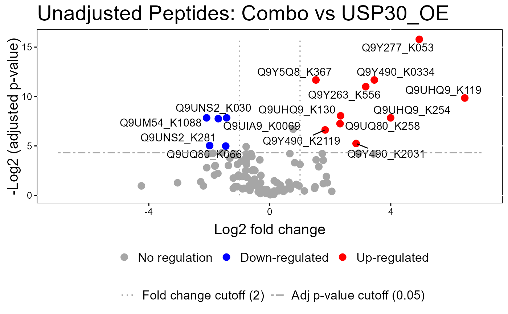
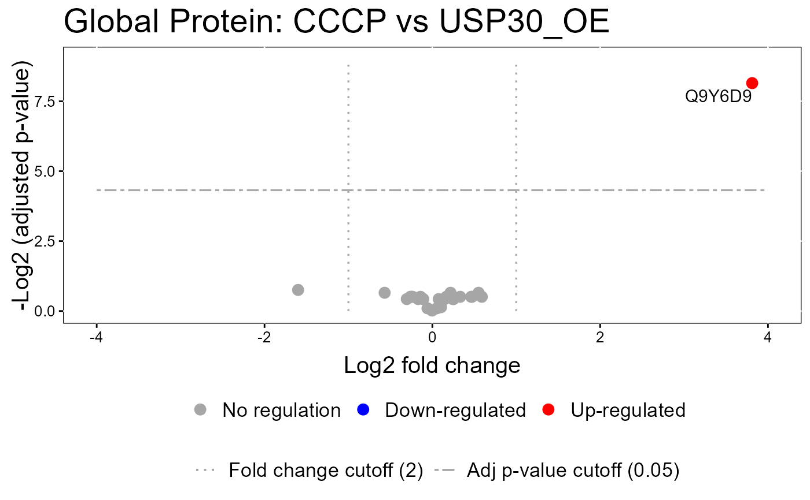
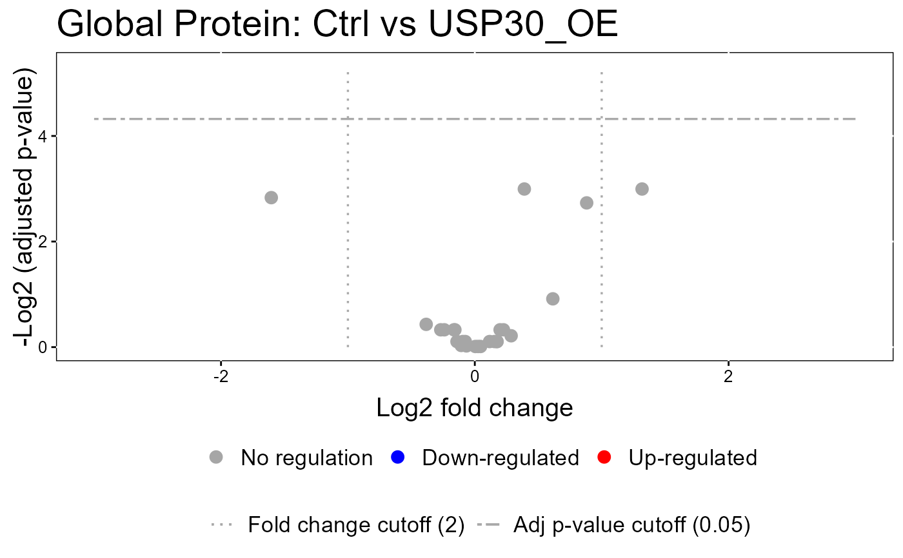
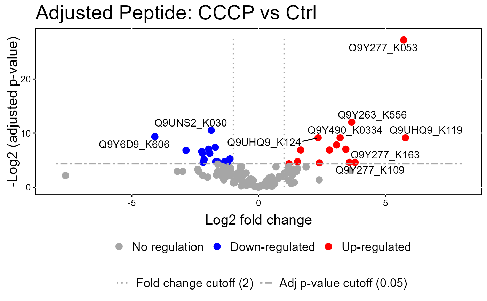
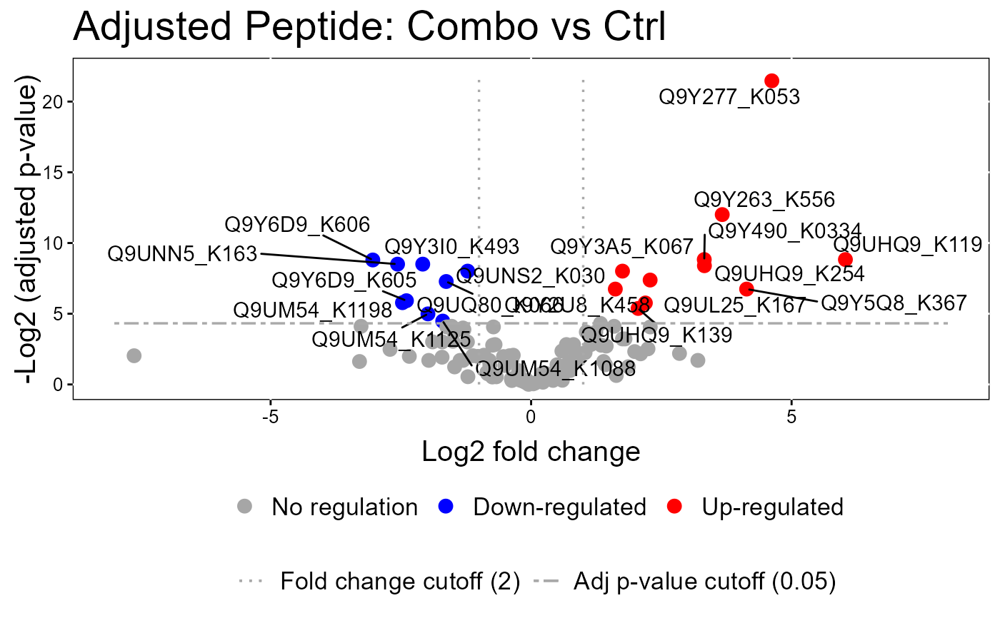
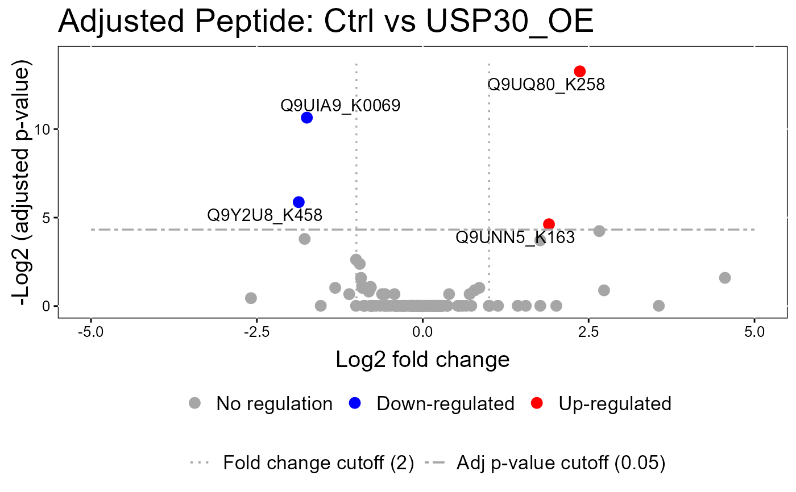

Visualization for model-based analysis and summarization
Source:R/groupComparisonPlotsPTM.R
groupComparisonPlotsPTM.RdTo analyze the results of modeling changes in abundance of modified peptides and overall protein, groupComparisonPlotsPTM takes as input the results of the groupComparisonPTM function. It asses the results of three models: unadjusted PTM, adjusted PTM, and overall protein. To asses the results of the model, the following visualizations can be created: (1) VolcanoPlot (specify "VolcanoPlot" in option type), to plot peptides or proteins and their significance for each model. (2) Heatmap (specify "Heatmap" in option type), to evaluate the fold change between conditions and peptides/proteins
groupComparisonPlotsPTM( data = data, type, sig = 0.05, FCcutoff = FALSE, logBase.pvalue = 10, ylimUp = FALSE, ylimDown = FALSE, xlimUp = FALSE, x.axis.size = 10, y.axis.size = 10, dot.size = 3, text.size = 4, text.angle = 0, legend.size = 13, ProteinName = TRUE, colorkey = TRUE, numProtein = 50, width = 10, height = 10, which.Comparison = "all", which.PTM = "all", address = "" )
Arguments
| data | name of the list with models, which can be the output of the
MSstatsPTM |
|---|---|
| type | choice of visualization, one of VolcanoPlot or Heatmap |
| sig | FDR cutoff for the adjusted p-values in heatmap and volcano plot. level of significance for comparison plot. 100(1-sig)% confidence interval will be drawn. sig=0.05 is default. |
| FCcutoff | For volcano plot or heatmap, whether involve fold change cutoff or not. FALSE (default) means no fold change cutoff is applied for significance analysis. FCcutoff = specific value means specific fold change cutoff is applied. |
| logBase.pvalue | for volcano plot or heatmap, (-) logarithm transformation of adjusted p-value with base 2 or 10(default). |
| ylimUp | for all three plots, upper limit for y-axis. FALSE (default) for volcano plot/heatmap use maximum of -log2 (adjusted p-value) or -log10 (adjusted p-value). FALSE (default) for comparison plot uses maximum of log-fold change + CI. |
| ylimDown | for all three plots, lower limit for y-axis. FALSE (default) for volcano plot/heatmap use minimum of -log2 (adjusted p-value) or -log10 (adjusted p-value). FALSE (default) for comparison plot uses minimum of log-fold change - CI. |
| xlimUp | for Volcano plot, the limit for x-axis. FALSE (default) for use maximum for absolute value of log-fold change or 3 as default if maximum for absolute value of log-fold change is less than 3. |
| x.axis.size | size of axes labels, e.g. name of the comparisons in heatmap, and in comparison plot. Default is 10. |
| y.axis.size | size of axes labels, e.g. name of targeted proteins in heatmap. Default is 10. |
| dot.size | size of dots in volcano plot and comparison plot. Default is 3. |
| text.size | size of ProteinName label in the graph for Volcano Plot. Default is 4. |
| text.angle | angle of x-axis labels represented each comparison at the bottom of graph in comparison plot. Default is 0. |
| legend.size | size of legend for color at the bottom of volcano plot. Default is 7. |
| ProteinName | for volcano plot only, whether display protein names or not. TRUE (default) means protein names, which are significant, are displayed next to the points. FALSE means no protein names are displayed. |
| colorkey | TRUE(default) shows colorkey. |
| numProtein | The number of proteins which will be presented in each heatmap. Default is 50. |
| width | width of the saved file. Default is 10. |
| height | height of the saved file. Default is 10. |
| which.Comparison | list of comparisons to draw plots. List can be labels of comparisons or order numbers of comparisons from levels(data$Label) , such as levels(testResultMultiComparisons$ComparisonResult$Label). Default is "all", which generates all plots for each protein. |
| which.PTM | Protein list to draw comparison plots. List can be names of Proteins or order numbers of Proteins from levels(testResultMultiComparisons$ComparisonResult$Protein). Default is "all", which generates all comparison plots for each protein. |
| address | the name of folder that will store the results. Default folder is the current working directory. The other assigned folder has to be existed under the current working directory. An output pdf file is automatically created with the default name of "VolcanoPlot.pdf" or "Heatmap.pdf". The command address can help to specify where to store the file as well as how to modify the beginning of the file name. If address=FALSE, plot will be not saved as pdf file but showed in window |
Value
plot or pdf
Examples
#>#> INFO [2021-05-21 14:19:07] == Start to test and get inference in whole plot ... #> | | | 0% | |= | 1% | |= | 2% | |== | 2% | |== | 3% | |=== | 4% | |=== | 5% | |==== | 6% | |===== | 7% | |====== | 8% | |====== | 9% | |======= | 10% | |======== | 11% | |======== | 12% | |========= | 13% | |========== | 14% | |=========== | 15% | |=========== | 16% | |============ | 17% | |============ | 18% | |============= | 18% | |============= | 19% | |============== | 20% | |=============== | 21% | |=============== | 22% | |================ | 22% | |================ | 23% | |================= | 24% | |================= | 25% | |================== | 26% | |=================== | 27% | |==================== | 28% | |==================== | 29% | |===================== | 30% | |====================== | 31% | |====================== | 32% | |======================= | 33% | |======================== | 34% | |========================= | 35% | |========================= | 36% | |========================== | 37% | |========================== | 38% | |=========================== | 38% | |=========================== | 39% | |============================ | 40% | |============================= | 41% | |============================= | 42% | |============================== | 42% | |============================== | 43% | |=============================== | 44% | |=============================== | 45% | |================================ | 46% | |================================= | 47% | |================================== | 48% | |================================== | 49% | |=================================== | 50% | |==================================== | 51% | |==================================== | 52% | |===================================== | 53% | |====================================== | 54% | |======================================= | 55% | |======================================= | 56% | |======================================== | 57% | |======================================== | 58% | |========================================= | 58% | |========================================= | 59% | |========================================== | 60% | |=========================================== | 61% | |=========================================== | 62% | |============================================ | 62% | |============================================ | 63% | |============================================= | 64% | |============================================= | 65% | |============================================== | 66% | |=============================================== | 67% | |================================================ | 68% | |================================================ | 69% | |================================================= | 70% | |================================================== | 71% | |================================================== | 72% | |=================================================== | 73% | |==================================================== | 74% | |===================================================== | 75% | |===================================================== | 76% | |====================================================== | 77% | |====================================================== | 78% | |======================================================= | 78% | |======================================================= | 79% | |======================================================== | 80% | |========================================================= | 81% | |========================================================= | 82% | |========================================================== | 82% | |========================================================== | 83% | |=========================================================== | 84% | |=========================================================== | 85% | |============================================================ | 86% | |============================================================= | 87% | |============================================================== | 88% | |============================================================== | 89% | |=============================================================== | 90% | |================================================================ | 91% | |================================================================ | 92% | |================================================================= | 93% | |================================================================== | 94% | |=================================================================== | 95% | |=================================================================== | 96% | |==================================================================== | 97% | |==================================================================== | 98% | |===================================================================== | 98% | |===================================================================== | 99% | |======================================================================| 100% #> INFO [2021-05-21 14:19:09] == Comparisons for all proteins are done.#>#> INFO [2021-05-21 14:19:09] == Start to test and get inference in whole plot ... #> | | | 0% | |=== | 4% | |===== | 8% | |======== | 12% | |=========== | 15% | |============= | 19% | |================ | 23% | |=================== | 27% | |====================== | 31% | |======================== | 35% | |=========================== | 38% | |============================== | 42% | |================================ | 46% | |=================================== | 50% | |====================================== | 54% | |======================================== | 58% | |=========================================== | 62% | |============================================== | 65% | |================================================ | 69% | |=================================================== | 73% | |====================================================== | 77% | |========================================================= | 81% | |=========================================================== | 85% | |============================================================== | 88% | |================================================================= | 92% | |=================================================================== | 96% | |======================================================================| 100% #> INFO [2021-05-21 14:19:10] == Comparisons for all proteins are done.#>groupComparisonPlotsPTM(data = model.lf.msstatsptm, type = "VolcanoPlot", FCcutoff= 2, logBase.pvalue = 2, address=FALSE)#> Warning: ggrepel: 10 unlabeled data points (too many overlaps). Consider increasing max.overlaps#> Warning: ggrepel: 9 unlabeled data points (too many overlaps). Consider increasing max.overlaps#>#>#> Warning: ggrepel: 14 unlabeled data points (too many overlaps). Consider increasing max.overlaps#> Warning: ggrepel: 11 unlabeled data points (too many overlaps). Consider increasing max.overlaps